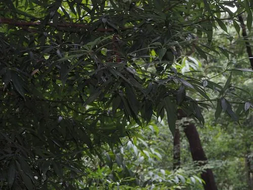

乔木 · 植物界
闽楠 Phoebe bournei

中国特有的珍贵用材树种，木材芳香耐腐、纹理美观，是“金丝楠木”的来源之一，为国家二级保护植物。
- 分类
- 门被子植物门纲木兰纲目樟目科樟科属楠属
- 栖息环境
- 海拔 500–1000 米的常绿阔叶林，喜温暖湿润，幼树耐阴
- 地理分布
- 中国福建、江西、浙江、广东、广西、湖北、贵州等地，为中国特有树种
- 保护级别
- 暂无评估；中国国家二级保护野生植物
物种志
闽楠为常绿大乔木，高可达 30 m，树干通直，树皮灰白色、平滑；叶片革质，披针形或倒披针形，上面深绿光亮，下面被短柔毛。花期 4 月，圆锥花序腋生，花小、黄绿色；果实为浆果状核果，椭圆形，成熟时黑色，基部具宿存花被。
闽楠是中国特有树种，分布于福建、江西、浙江、广东、广西、湖北、贵州等地海拔 500–1000 m 的常绿阔叶林中，喜温暖湿润、耐阴，适宜深厚肥沃的酸性壤土。木材纹理细腻、芳香耐腐、不易变形，是建筑、家具与雕刻的上等材料，也是“金丝楠木”的来源之一；树形端庄、四季常青，可作园林树种。由于长期采伐，野生闽楠资源濒危，被列为国家二级保护野生植物。
形态与习性
- 株高可达 30 m，树干通直
- 花期4 月，圆锥花序腋生
- 果期10–11 月，核果黑色
- 光照幼树耐阴，成年后喜光
- 土壤深厚肥沃的酸性壤土
- 主要用途建筑、家具与雕刻用材、园林树种
趣味知识
- 闽楠木材芳香耐腐、纹理细腻，是“金丝楠木”的重要来源之一。
- 闽楠生长缓慢，可用的大径材往往需要上百年时间。
- 闽楠野生资源濒危，已被列为国家二级保护野生植物。